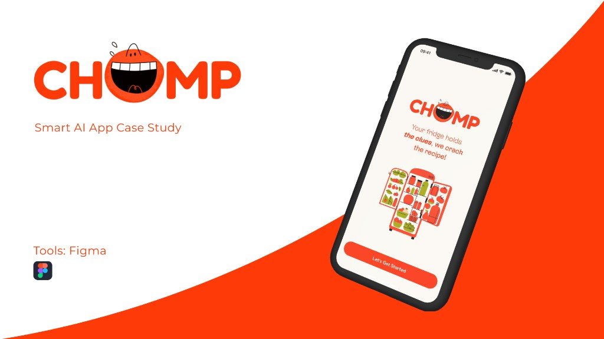
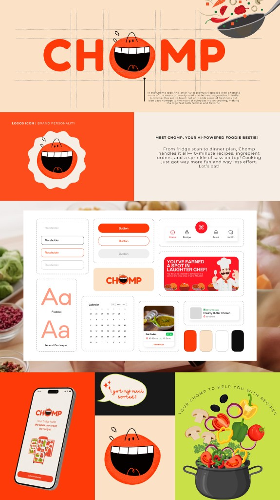
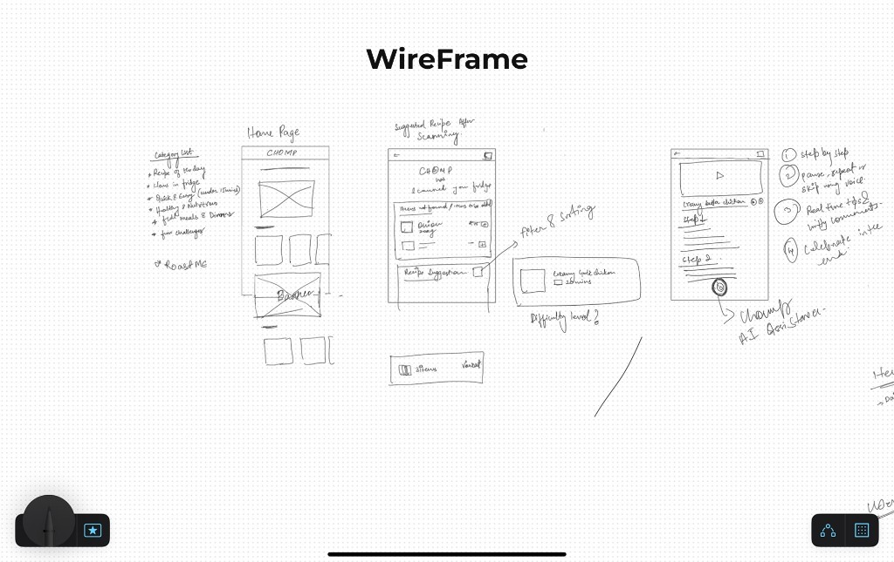
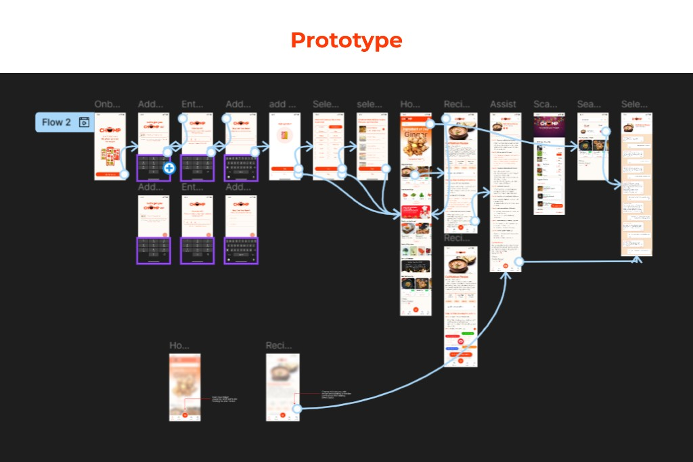
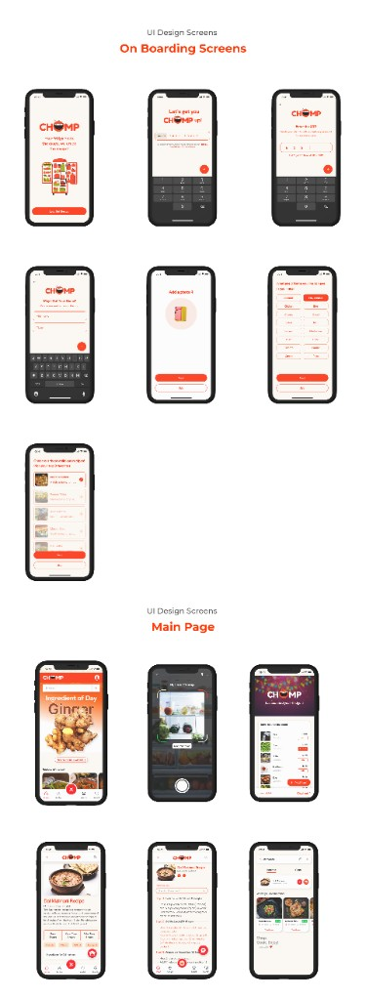

01 — Cover
CHOMP
Smart AI App Case Study
Tools: Figma

02 — About the project
Chomp is your AI-powered food bestie
Chomp is your AI-powered food bestie, a smart, sassy, and ridiculously helpful app that takes the stress out of cooking.
What it does?
- 01Turns mealtime into playtime
It scans your fridge, whips up tasty recipe ideas, and with one tap, grabs whatever you're missing.
- 02Makes food discovery playful
Powered by chatty AI with a flair for fun, it transforms food discovery into a playful, game-like adventure you'll actually want to join.
- 03Adapts to you
It vibes with your tastes, moods, and routines, whether you're craving a speedy snack, something healthy, or a fun kitchen quest!
- 04Makes shopping easier
Connects with your grocery apps to make shopping super easy while helping you pick healthier foods without any hassle!
03 — The problem
Cooking shouldn't feel like a chore
People waste time staring into fridges, struggle with meal decisions, and abandon boring cooking apps.
Food tech lacks personalization + personality.
04 — Competitor analysis
Yummly
Strengths
- Smart recipe recommendations using AI based on dietary preferences, allergies, and past behavior.
- Integrated meal planning and shopping list features.
- Step-by-step guided cooking with timers and video instructions.
- Supports appliance integration (e.g., smart ovens).
- Clean and intuitive UI/UX with a massive recipe database.
Weaknesses
- Limited engagement features, lacks gamification or community-driven interaction.
- Some premium features are locked behind a subscription (Yummly Pro).
- Grocery list integration can be clunky with certain retailers.
Opportunities
- Expand social or community features (e.g., shared meal plans, recipe swaps).
- Improve real-time fridge or pantry integration.
- Broaden partnerships with grocery services for seamless ordering.
Threats
- Competitive pressure from free apps with similar features.
- Risk of users moving to more engaging or culturally localized platforms.
05 — Competitor analysis
Tasty
Strengths
- Extremely popular with a massive global user base.
- Highly visual and engaging recipe videos, perfect for social media sharing.
- Simple, beginner-friendly recipes aimed at younger audiences.
- Integrates with Walmart for ingredient shopping.
- Fast and easy-to-follow instructions, especially good for quick meals.
Weaknesses
- Less focus on personalized dietary preferences or allergies.
- Limited advanced features like meal planning or fridge scanning.
- Focused more on Western cuisine, less local relevance in other cultures.
Opportunities
- Add personalization through AI (diet filters, cuisine preferences).
- Broaden grocery integration beyond Walmart.
- Expand recipe database to include more international/ethnic recipes.
Threats
- User drop-off from seasoned cooks who want more advanced or diverse recipes.
- Competing platforms offering better utility (like smart meal plans, automation).
06 — Branding
Branding
Fredoka · Rebond Grotesque · Buttons · Navigation · Calendar · Recipe cards · Colors · Food visual elements

07 — Wireframes
WireFrame

08 — Prototype
Prototype

09 — UI design screens
Main page
- Ingredient of the Day
- Ginger
- Scan Chomp
- Recipe recommendations
- Dal Makhani Recipe
- Recipe details
- Dinner recipes
